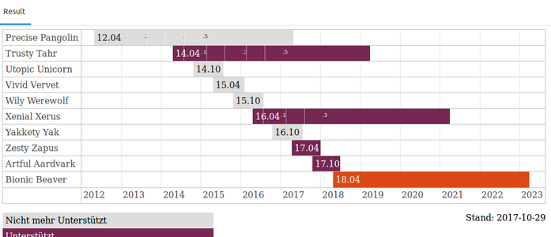

Releases
Versionspolitik bei Ubuntu¶
Ubuntu ist eine Linux-Distribution, bei der es halbjährlich eine neue Version (Release) gibt und bei der nach einer gewissen Zeit die Unterstützung für eine ältere Version eingestellt wird. Dabei erscheint neben den normalen Versionen, deren Supportzeitraum 9 Monate beträgt, alle zwei Jahre eine LTS-Version (Long Term Support), welche ab Ubuntu 12.04 fünf Jahre (Desktop und Server) mit Updates unterstützt wird. Weitere Informationen über die Versionen findet man im Artikel Unterschiede LTS und normale Version.
Einen anderen Ansatz verfolgen Distributionen wie Arch Linux, Gentoo oder Aptosid mit dem Entwicklungsmodell Rolling Release. Hier werden keine Distributions-Upgrades benötigt, da sie laufend und ohne Support-Deadline über die festen Repositories aktuell gehalten werden.
Grundsätzliches zur Versionierung¶
Mit Ubuntu 13.04 änderte sich das Veröffentlichungs- und Unterstützungsmodell von Ubuntu. Zwischenversionen (also Non-LTS- bzw. STS-Versionen) werden nur noch 9 statt früher 18 Monate unterstützt. Mark Shuttleworth selbst empfiehlt  nicht ambitionierten Anwendern ausdrücklich, die Long Term Support-Versionen zu nutzen:
nicht ambitionierten Anwendern ausdrücklich, die Long Term Support-Versionen zu nutzen:
"Diese Non-LTS-Versionen seien ohnehin nur für Leute gedacht, die an Ubuntu in irgendeiner Form mitarbeiten, alle anderen sollten nur LTS-Versionen einsetzen."
Marcus Fischer schrieb:
Produktiv orientierte Anwender und Firmen haben allerdings kein Interesse an einer halbjährlich wiederkehrenden Umstellung des Systems. Bei diesen Anwendern liegt der Fokus auf größtmöglicher Stabilität (...) Andererseits ist bei vielen anderen Ubuntu-Benutzern der Wunsch nach einem stets aktuellen System sehr groß. Hier werden bereitwillig Abstriche in Bezug auf die Stabilität in Kauf genommen.
Aus der Erfahrung mit zwei LTS-Nachfolgeversionen (6.10 und 8.10) muss man beim bisherigen Kenntnisstand sagen, dass die Versionen, die direkt auf eine LTS-Veröffentlichung erscheinen, nicht für den produktiven Einsatz zu empfehlen sind. Die Gründe hierfür sind teilweise unterschiedlich, aber ein Grund leuchtet sofort ein: Die vorhergehenden LTS-Versionen sind auf größtmögliche Stabilität ausgelegt, sodass viele Veränderungen an Ubuntu während der Entwicklung dieser LTS-Version verschoben werden. Dadurch stauen sich die Veränderungen, und die Version LTS+1 kommt in den zweifelhaften »Genuss« von besonders vielen Veränderungen.
Hinweis zu Distributions-Upgrades¶
Michael Kofler sagte in einem Interview :
Von solchen Distribution-Upgrades rate ich seit Jahren in allen meinen Linux-Büchern ab. Eine Neuinstallation ist schneller und sicherer.
Die Paketverwaltung ist zwar so ausgelegt, dass ein Upgrade relativ problemlos möglich ist. Hat man jedoch die vorinstallierten Software verändert, insbesondere durch die Installation von Software aus Fremdquellen, so ist eine Neuinstallation die bessere Wahl.
Dabei sollte man aber beachten, dass bei einer Standardinstallation die Festplatte bzw. Partitionen unter Umständen neu formatiert werden und somit persönliche Daten verloren gehen können. Eine Datensicherung (Backup) ist vorher immer Pflicht - egal, ob man zu einer neueren Ubuntu-Version wechselt (Upgrade) oder eine Neuinstallation vornimmt.
Hinweis:
Eine detailliertere Übersicht der einzelnen Versionen findet sich unter Steckbriefe der Ubuntuversionen. Für eine (chronologische) Übersicht aller bisher von Ubuntu und seinen offiziellen Varianten Kubuntu und Xubuntu verwendeten Desktop-Hintergründe (Wallpaper) bietet sich der Artikel Ubuntu-Wallpaper an.
Grafische Übersicht der letzten Ubuntuversionen¶
|  |
Zeitleiste der letzten Ubuntuversionen. Quelle: JSFiddle  |
Unterstützt¶
Diese Versionen werden für den täglichen Gebrauch empfohlen. Sie werden mit Sicherheitsaktualisierungen versorgt. Download-Möglichkeiten finden sich jeweils am Ende des unter "Codename" genannten Artikels.
| Unterstützte Version | ||||
| Codename | Deutsche Übersetzung | Versionsnummer | Releasedatum | Unterstützt bis |
| Artful Aardvark | raffiniertes Erdferkel | 17.10 | 20. Oktober 2017 | Juli 2018 |
| Xenial Xerus | gastfreundliches Kap-Borstenhörnchen | 16.04 (LTS) | 21. April 2016 | April 2021 |
| Trusty Tahr | Treuer Tahr | 14.04 (LTS) | 17. April 2014 | April 2019 |
In Entwicklung / Planung¶
Diese Version wird aktuell geplant oder befindet sich in Entwicklung.
| Geplante Version | ||||
| Codename | Deutsche Übersetzung | Versionsnummer | Releasedatum | Unterstützt bis |
| Bionic Beaver | Bionischer Biber | 18.04 LTS | 26. April 2018 | April 2023 |
Nicht mehr unterstützt¶
Diese Versionen werden nicht mehr mit Sicherheitsaktualisierungen versorgt und sollten nicht mehr eingesetzt werden.
| Veraltete Versionen | ||||
| Codename | Deutsche Übersetzung | Versionsnummer | Releasedatum | Unterstützt bis |
| Zesty Zapus | Begeisterte Hüpfmaus | 17.04 | 13. April 2017 | 13. Januar 2018 |
| Yakkety Yak | (nicht übersetzbares Wortspiel) Yak | 16.10 | 13. Oktober 2016 | 20. Juli 2017 |
| Wily Werewolf | Hinterlistiger Werwolf | 15.10 | 22. Oktober 2015 | 28. Juli 2016 |
| Vivid Vervet | Lebhafte Grünmeerkatze | 15.04 | 23. April 2015 | 4. Februar 2016 |
| Utopic Unicorn | Utopisches Einhorn | 14.10 | 23. Oktober 2014 | 23. Juli 2015 |
| Saucy Salamander | Frecher Salamander | 13.10 | 17. Oktober 2013 | 17. Juli 2014 |
| Raring Ringtail | Enthusiastisches Katzenfrett | 13.04 | 25. April 2013 | 27. Januar 2014 |
| Quantal Quetzal | Quantischer Quetzal | 12.10 | 18. Oktober 2012 | 16. Mai 2014 |
| Precise Pangolin | Präziser Pangolin | 12.04 (LTS) | 26. April 2012 | 28. April 2017 |
| Oneiric Ocelot | Verträumter Ozelot | 11.10 | 13. Oktober 2011 | 09. Mai 2013 |
| Natty Narwhal | Schicker Narwal | 11.04 | 28. April 2011 | 28. Oktober 2012 |
| Maverick Meerkat | Eigensinniges Erdmännchen | 10.10 | 10. Oktober 2010 | 10. April 2012 |
| Lucid Lynx | Heller Luchs | 10.04 (LTS) | 29. April 2010 | 9. Mai 2013 (Desktop) 29. April 2015 (Server) |
| Karmic Koala | Karmischer Koala | 9.10 | 29. Oktober 2009 | 29. April 2011 |
| Jaunty Jackalope | Lebhafter Wolpertinger | 9.04 | 23. April 2009 | 23. Oktober 2010 |
| Intrepid Ibex | Unerschrockener Steinbock | 8.10 | 30. Oktober 2008 | 30. April 2010 |
| Hardy Heron | Kühner Reiher | 8.04 (LTS) | 24. April 2008 | 12. Mai 2011 (Desktop) 09. Mai 2013 (Server) |
| Gutsy Gibbon | Mutiger Gibbon | 7.10 | 18. Oktober 2007 | 18. April 2009 |
| Feisty Fawn | Lebhaftes Rehkitz | 7.04 | 19. April 2007 | 19. Oktober 2008 |
| Edgy Eft | Nervöser Molch | 6.10 | 26. Oktober 2006 | 25. April 2008 |
| Dapper Drake | Eleganter Erpel | 6.06 (LTS) | 01. Juni 2006 | 14. Juli 2009 (Desktop) 01. Juni 2011 (Server) |
| Breezy Badger | Flotter Dachs | 5.10 | 13. Oktober 2005 | 13. April 2007 |
| Hoary Hedgehog | Ergrauter Igel | 5.04 | 08. April 2005 | 31. Oktober 2006 |
| Warty Warthog | Warziges Warzenschwein | 4.10 | 20. Oktober 2004 | 30. April 2006 |
Links¶
Unterschiede LTS und normale Version - Weitere Informationen über die unterschiedlichen Versionen
Releases - Übersicht im Ubuntu.com-Wiki
- Erstellt mit Inyoka
-
 2004 – 2017 ubuntuusers.de • Einige Rechte vorbehalten
2004 – 2017 ubuntuusers.de • Einige Rechte vorbehalten
Lizenz • Kontakt • Datenschutz • Impressum • Serverstatus -
Serverhousing gespendet von